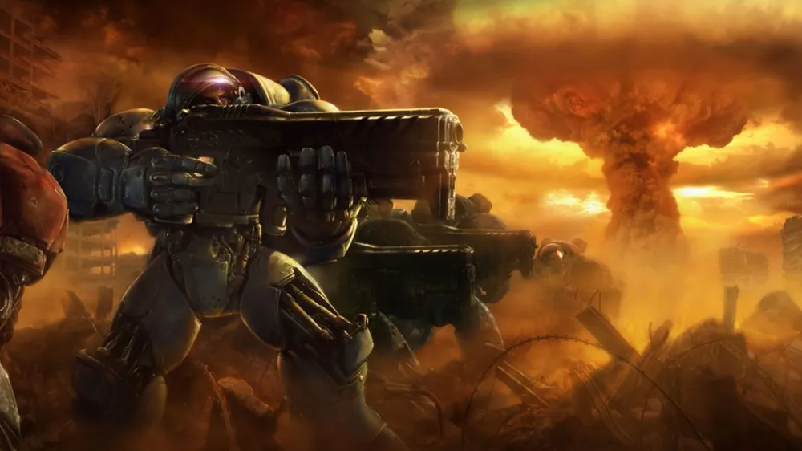

테란은 지구에서 버려진 범죄자 집단, 반체제 인사들, 사이오닉 능력자들으로 이루어진 인간 종족이다. 
적응력과 경제성이 좋으나 자가회복이 불가능하다는 단점이 있다. 스타크래프트 1에서 가장 속도가 빠른 유닛인 벌처와 가장 사거리가 긴 시즈탱크가 이 종족에게 있다. 22세기, 지구의 갈수록 늘어나는 인구 때문에 식량 부족과 같은 일이 일어나자, 강대국 협의회(후 지구 집정 연합으로 명칭을 바꿈)는 범죄자들, 사이오닉 능력자들, 반체제 인사들을 포함한 20만 명을 다른 행성으로 이동시킨다. 그 과정에서 슈퍼컴퓨터에 오류가 일어나, 그들은 원래 의도했던 곳이 아닌 다른 곳, 즉 코프룰루 구역에 불시착한다. 4개의 수송선들 중 하나는 폭발하고, 남은 3개의 수송선들은 각각 모리아, 타소니스, 우모자 행성에 떨어져 켈모리아 조합, 테란 연합, 우모자 보호령이 된다.후에 테란 자치령으로 발전한다.